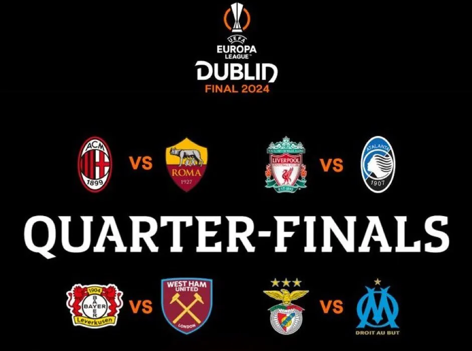

Ya se saben cuales seran los partidos de cuartos de final

Hubo sorteo de los cuartos de final de la Champions y de la Europa League de esta
temporada, en donde hay varios encuentros que se ven muy atractivos. Los partidos son los siguientes:
Champions League martes 09/04/2024:
Arsenal vs Bayern Munich 15:00 hora venezolana
Real Madrid vs Manchester City 15:00 hora venezolana
Champions League miercoles 10/04/2024:
PSG vs FC Barcelona 15:00 hora venezolanas
Atletico de Madrid vs Borussia Dortmund 15:00 hora venezolana
Europa League jueves 11/04/2024:
Liverpool vs Atalanta 15:00 hora venezolana
Benfica vs Marsella 15:00 hora venezolana
Milan vs Roma 15:00 hora venezolana
Bayern Leverkusen vs West Ham United 15:00 hora venezolana
Champions League martes 16/04/2024:
FC Barcelona vs PSG 15:00 hora venezolana
Borussia Dortmund vs Atletico de Madrid 15:00 hora venezolana
Champions League miercoles 17/04/2024:
Bayern Munich vs Arsenal 15:00 hora venezolana
Manchester City vs Real Madrid 15:00 hora venezolana
Europa League jueves 18/04/2024:
Atalanta vs Liverpool 15:00 hora venezolana
Marsella vs Benfica 15:00 hora venezolana
Roma vs Milan 15:00 hora venezolana
West Ham United vs Bayern Leverkusen 15:00 hora venezolana